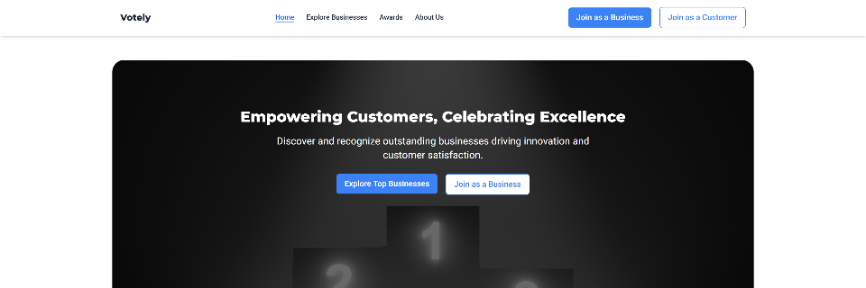

Intro
Hello! My name is Kaneza Fred, and I'm on an exciting journey to
become a full-stack developer. With a solid foundation in frontend
development, earned through my training with Kreativstrom, and
ongoing studies at ZTM Academy, I'm dedicated to breaking into the
tech industry.
Interested in my journey and skills?
Download my Resume/CV to see more about my
experience and qualifications.
Work
Welcome to my portfolio! Here, you’ll find a collection of projects
that showcase my journey from a frontend developer to an aspiring
full-stack developer. Each project represents a step in my learning
process and a commitment to honing my skills and delivering
innovative solutions.
- Project Title: Portfolio Website
-
Designed and built my own portfolio website to showcase my
projects, share my journey, and provide a platform for visitors
to get in touch with me.
-
Technologies Used: HTML, CSS, JavaScript, React
-
What’s Next?
As I continue my studies and work on new projects, I’m excited to
keep expanding my skill set and exploring new technologies. Stay
tuned for more updates and feel free to check out my
GitHub
for the latest code and projects.
About

An aspiring full-stack developer with a passion for coding and a
drive to transform my career and life. I started my journey with a
training certificate in Frontend Development from
Kreativstrom
and am currently deepening my skills through the
ZTM Academy.
My Journey
Tech has always fascinated me, and making the leap from curiosity to
a full-fledged career has been both challenging and exhilarating.
Balancing my studies with personal responsibilities has taught me
resilience and adaptability. Each project I undertake not only
sharpens my skills but also reinforces my determination to succeed
in this field.
Vision and Goals
I strive to achieve a balanced and fulfilling life, where I can grow
financially, spiritually, morally, and in terms of health. My aim is
to develop innovative solutions that can make a positive impact and
to inspire others who are navigating similar paths.
Beyond Coding
When I'm not coding, you can find me exploring my interests in
fashion, music, dancing, and traveling. These passions fuel my
creativity and provide a well-rounded perspective that I bring into
my tech projects.
Connect with Me
I love connecting with like-minded individuals, potential
collaborators, and anyone interested in tech. Feel free to reach out
to me through my Contact Page, and let's
share ideas, collaborate, or simply chat about the exciting world of
technology.
Contact
Welcome to My Blog
Exploring Tech with Kaneza
Hi there! üëã Join me on my journey from a coding novice to an
aspiring full-stack developer. Here, you'll find:
-
Personal Stories üìñ: My path into tech,
challenges, and successes.
-
Project Highlights üíª: Showcases of my work and
the tech I use.
-
Learning Insights üìö: Lessons from courses and
hands-on practice.
-
Industry Thoughts üåê: My take on tech trends
and diversity.
-
Inspiration ✨: Balancing a tech career with
personal growth.
Dive in, share your thoughts, and let's learn together! üöÄ